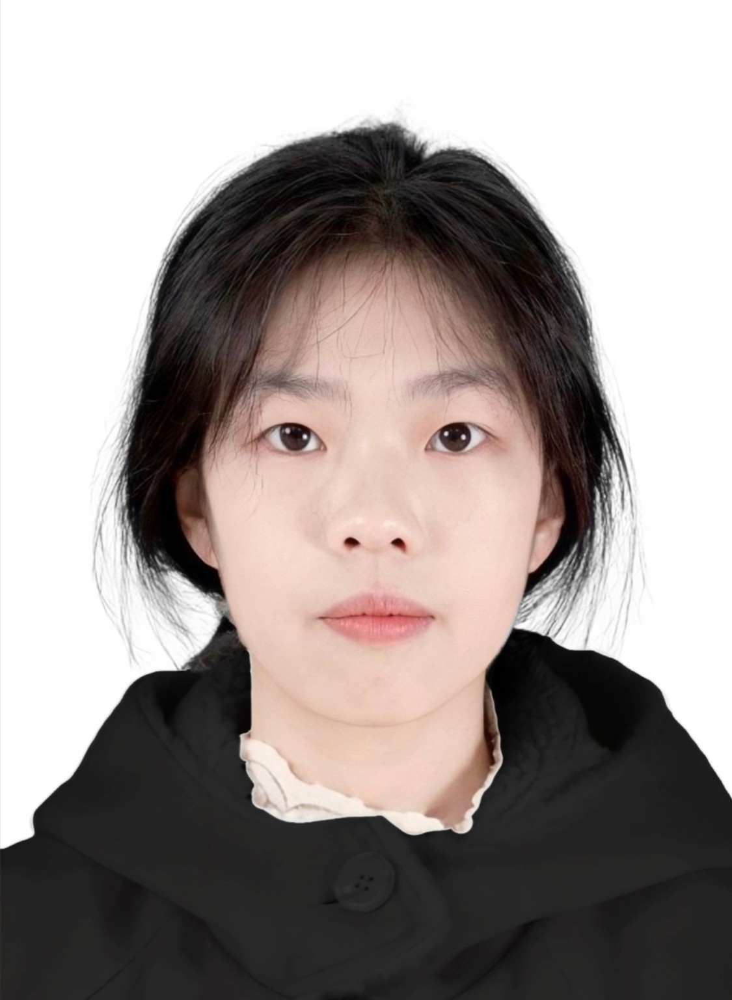

视频暂时无法播放，请稍后刷新重试。
01 / 剧集作品EP01 · 02:05
十二番花信
民国情感叙事 / 偏写实三维影像
主要负责AI影像生成与镜头迭代，依据剧情完成镜头画面落地，重点控制人物造型、表演细节与冷暖光影，使情绪在连续镜头中自然衔接。

从剧本与视觉参考出发，
让美术方向成为连贯的动态影像。
网页展示为部分项目，更多项目成片可在面试或沟通时提供。
视频暂时无法播放，请稍后刷新重试。
民国情感叙事 / 偏写实三维影像
主要负责AI影像生成与镜头迭代，依据剧情完成镜头画面落地，重点控制人物造型、表演细节与冷暖光影，使情绪在连续镜头中自然衔接。
视频暂时无法播放，请稍后刷新重试。
上美影画风 / 东方手绘美术动画
独立负责AIGC影像制作板块，在十几分钟内容中维持统一美术语言，完成粗剪输出。
视频暂时无法播放，请稍后刷新重试。
新中式传统美术动画 / 皮影剪纸
独立完成选题、剧本改编、风格确定、美术资产、分镜及剪辑合成、配音配乐。
视频暂时无法播放，请稍后刷新重试。
西方奇幻 / 写实电影感
主要负责剧本标注、资产生成、镜头生成与粗剪，衔接文本、影像素材与初步成片。
视频暂时无法播放，请稍后刷新重试。
电影感写实 / 戏剧性光影 / 暗黑奇幻
拆解经典电影的构图、焦段、光影和类型片影调，将参考规律重新组织为项目镜头，并完成动态影像生成与后期整合。
视频暂时无法播放，请稍后刷新重试。
古装喜剧 / 真人感写实影像 / 竖屏短剧
主要负责AI影像生成与镜头迭代，围绕人物表情、动作反应与双人互动调整画面，在竖屏构图中清晰呈现情节信息，通过人物反应与情境反差传达喜剧效果。
我是彭妍，数字媒体技术本科毕业，目前在上海从事AIGC影像制作。具备AI量产短剧、精品剧商业制作与独立短片创作经验，工作覆盖剧本拆解、角色与场景资产准备、镜头生成及后期整合，具体职责随项目分工展开。
我的制作方向涵盖上美影画风、新中式皮影剪纸与电影感写实影像。关注人物表演、镜头中的空间关系，以及角色与场景在连续剧情中的一致性；也会分析经典电影的构图、光影与色彩，将视觉参考转化为适合项目的镜头方案。
制作中，我会根据剧情与反馈反复检查生成结果，针对形象跑偏、穿模和动作衔接等问题调整素材，并通过文件命名、素材归档与版本管理组织交付。在独立短片中，也承担剪辑、配音与配乐，将画面和声音整合为完整作品。
AIGC生成师 · 精品剧
AIGC视频制作 · 量产短剧制作
梳理人物关系、关键情节及交付要求，明确镜头需要传达的信息。
确定风格、构图、光影和人物动作，将剧情拆解为可执行的镜头需求。
统一外形、服装和环境参考，为后续镜头提供一致的视觉依据。
检查人物神态、视线、动作、空间关系与画面瑕疵，结合反馈调整生成结果。
通过粗剪检查剧情和动作衔接；承担完整后期时，继续完成声音、字幕、调色与成片输出。
统一文件命名、归档素材和修改版本，按项目要求整理并交付。
湖南应用技术学院 · 数字媒体技术本科 · 专业前10%。
《地仙之祖·镇元》获2025年数媒竞赛湖南赛区二等奖、全国总决赛三等奖。